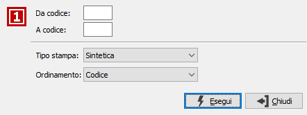
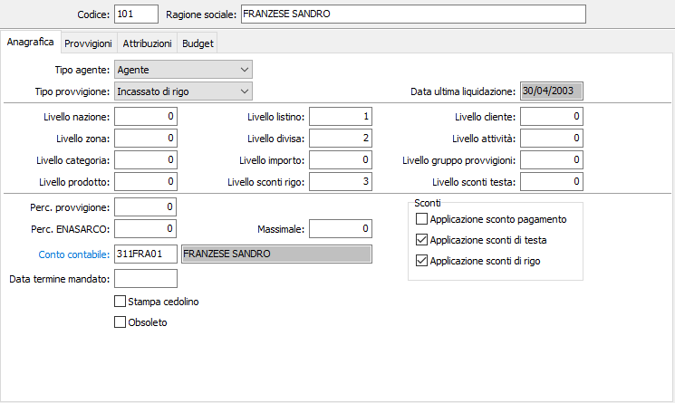
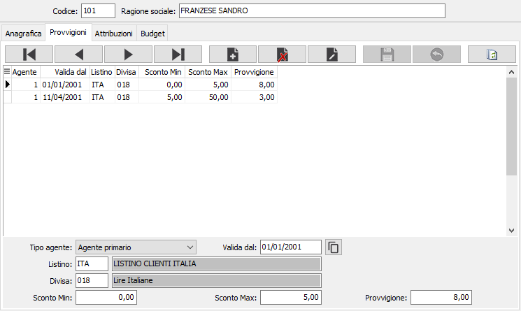
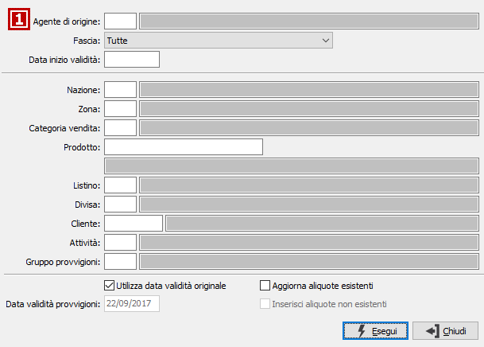
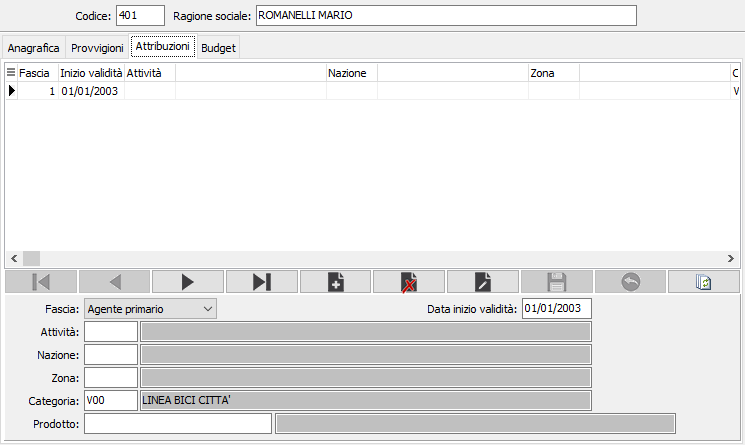
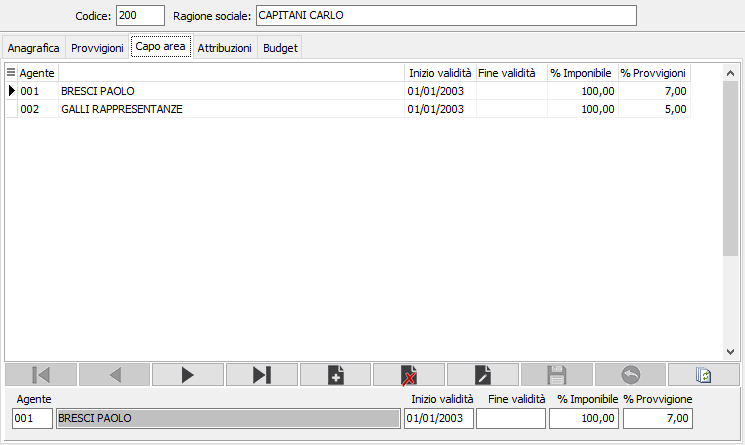
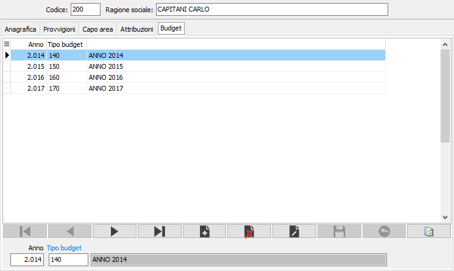

Agenti
La tabella consente di memorizzare i dati anagrafici degli agenti ed i parametri secondo i quali viene attivato il calcolo automatico delle provvigioni. la tabella si articola su più sezioni video che variano a seconda delle configurazioni.
Le sezioni Anagrafica e Provvigioni sono sempre presenti, la sezione Attribuzioni è attiva solo se configurata la gestione degli agenti di rigo nei documenti; nel caso di agente Capo Area sarà visibile un ulteriore sezione riservata a questa tipologia di agenti.
Alla tabella si può accedere anche interattivamente durante l'inserimento di un nuovo cliente, se è stato abilitato l'apposito flag, oppure Archivi, Generali, Agenti. Appare la seguente finestra video:
Sulla tool bar sono attivi i bottoni Anteprima, che consente di visualizzare l’anteprima di stampa, e Stampa, che consente di produrre i report a stampa dell’anagrafica Agenti.
In entrambi i casi, viene visualizzata la finestra video di selezione parametri di stampa.

Linguetta anagrafica

CODICE: inserire un codice alfanumerico di tre caratteri a libera scelta dell’utente, per individuare l'agente. Sul campo è attiva la ricerca (F9) sulla tabella stessa.
RAGIONE SOCIALE: inserire il nominativo dell'agente o del corrispondente.
TIPO AGENTE.: combo box per indicare se il nominativo trattato è di un agente o di un corrispondente. Valori possibili:
agente;
corrispondente;
capo area.
TIPO PROVVIGIONE: combo box per indicare il tipo di provvigione riservato all'agente/corrispondente. Valori possibili:
fatturato su documento;
incassato su documento;
fatturato di rigo;
incassato di rigo.
DATA ULTIMA LIQUIDAZIONE: visualizza, senza possibilità di modifica, la data dell'ultima liquidazione effettuata per l'agente attivo.
PARAMETRI PROVVIGIONI: si tratta di una serie di parametri che, singolarmente o in combinazione, consentono di determinare le modalità di assegnazione delle provvigioni. A ciascun agente possono essere infatti assegnati percentuali provvigionali diverse in funzione della nazione in cui vende, della zona, della categoria di vendita dei prodotti, del listino applicato, degli scaglioni di sconto praticati, ecc. Occorre quindi selezionare i parametri utilizzati dall’utente. Quando si prevedono parametri concorrenti, occorre definire la “gerarchia” di esame dei singoli parametri per la ricerca dell’aliquota provvigionale, segnalando nel campo a lato di ciascun parametro il livello gerarchico tramite in valore numerico crescente da 1 a 12. Ad esempio, se si assegnano provvigioni in relazione alla categoria di vendita e agli scaglioni di sconto praticato, prima dovrà essere individuata la categoria di vendita, poi lo scaglione di sconto. Pertanto il livello “categoria” avrà valore 1, ed il livello sconto il valore 2. Parametri previsti:
per nazione
per zona presente in anagrafica cliente
per categoria di vendita presente in anagrafica articolo
per specifico prodotto
per codice listino applicato
per divisa applicata
per scaglione di importo
per scaglione di sconto di rigo praticato
per scaglione di sconto testa praticato
cliente
attività cliente
gruppo provvigioni
PERCENTUALE PROVVIGIONE: campo numerico per inserire la percentuale di default assegnata all’agente. Viene utilizzata in assenza dei parametri precedenti, o comunque quando una fornitura è priva dei parametri.
MASSIMALE: in caso di agente soggetto ad Enasarco, definisce il tipo di massimale usato per il calcolo dell’Enasarco stessa. Valori ammessi:
0 = massimale non gestito
1 # 5 = utilizza il corrispondente massimale presente in configurazione
PERCENTUALE ENASARCO. Campo numerico per inserire la percentuale Enasarco
CONTO CONTABILE: indicare il codice del conto contabile che individua l'agente/corrispondente come fornitore, per poter avere le stampe degli estratti conto provvigioni. Sul campo sono attive le funzioni di ricerca (F9) e manutenzione (CTRL+W) sulla tabella stessa.
DATA TERMINE MANDATO: Il campo viene utilizzato nella gestione documenti del ciclo attivo; se valorizzato, in fase di inserimento/variazione documento quando si inserisce/varia il cliente, la destinazione diversa codificata o la data del documento viene effettuato un controllo per determinare se l'agente proposto dalle anagrafiche è ancora valido: l'agente è valido se la data del documento è precedente alla data termine mandato, nel caso sia uguale o successiva il campo agente del documento viene svuotato.
STAMPA CEDOLINO: definisce se per l'agente deve essere effettuata la stampa del cedolino provvigioni sulla fattura, qualora la causale lo preveda (casella con segno di spunta).
SCONTI: le tre caselle indicano, per ogni tipologia di sconto, se nel calcolo dell'imponibile provvigioni deve essere applicato lo sconto indicato (casella con segno di spunta) oppure no (casella vuota).
Linguetta provvigioni
L’aspetto della sezione varia in funzione dei parametri inseriti nella sezione precedente. La parte inferiore della finestra video si configura infatti coerentemente con il numero di parametri provvigionali indicati, perché deve ricevere le informazioni relative a ciascun parametro. Può essere quindi composta da un numero variabile di campi.
Conseguentemente anche la parte centrale della finestra video può visualizzare un corrispondente numero di colonne.
L’immagine presenta un esempio di parametrizzazione per Listino, Divisa e Sconti di rigo, nella sezione sono comunque spiegati tutti i campi visualizzabili.

TIPO AGENTE: combo box per definire il tipo agente a cui competono le provvigioni che seguono. Valori ammessi: Agente primario; Agente secondario (generalmente con aliquote provvigionali inferiori in quanto capo zona o capo vendita).
VALIDITA’ DAL: campo data per indicare la data di inizio validità delle provvigioni che seguono.
NAZIONE: codice della nazione per la quale valgono le provvigioni seguenti. Sul campo sono attive le funzioni di ricerca (F9) sulla tabella stessa.
ZONA: codice della zona per la quale valgono le provvigioni seguenti. Sul campo sono attive le funzioni di ricerca (F9) sulla tabella stessa.
CATEGORIA VENDITA: codice della categoria di vendita presente nell’anagrafica dell’articolo per la quale valgono le provvigioni seguenti. Sul campo sono attive le funzioni di ricerca (F9) sulla tabella stessa.
PRODOTTO: codice articolo per il quale valgono le provvigioni seguenti. Sul campo sono attive le funzioni di ricerca (F9) sulla tabella stessa.
LISTINO: codice del listino per il quale valgono le provvigioni seguenti. Sul campo sono attive le funzioni di ricerca (F9) sulla tabella stessa.
DIVISA: codice della divisa per la quale valgono le provvigioni seguenti. Sul campo sono attive le funzioni di ricerca (F9) sulla tabella stessa.
IMPORTO MINIMO: campo numerico per indicare, ove previsto, il limite minimo dello scaglione di importo per il quale valgono le provvigioni seguenti.
IMPORTO MASSIMO: campo numerico per indicare, ove previsto, il limite massimo dello scaglione di importo per il quale valgono le provvigioni seguenti.
SCONTO MINIMO: campo numerico per indicare, ove previsto, il limite minimo di sconto per il quale valgono le provvigioni seguenti.
SCONTO MASSIMO: campo numerico per indicare, ove previsto, il limite massimo di sconto per il quale valgono le provvigioni seguenti.
CLIENTE: codice del cliente per cui valgono le provvigioni seguenti. Sul campo sono attive le funzioni di ricerca (F9) sulla tabella stessa.
ATTIVITÀ: codice dell'attività per cui valgono le provvigioni seguenti. Sul campo sono attive le funzioni di ricerca (F9) sulla tabella stessa.
GRUPPO PROVVIGIONI: codice del gruppo provvigioni per cui valgono le provvigioni seguenti. Sul campo sono attive le funzioni di ricerca (F9) sulla tabella stessa.
PROVVIGIONE: campo numerico per indicare la percentuale di provvigione che compete in base ai criteri precedentemente indicati.
Il pulsante consente di copiare le condizioni da quelle inserite in un'altro agente; tramite la finestra mostrata sotto consente di specificare l'agente da cui si desidera copiare le condizioni, la fascia (primario, secondario, tutte), la da di validità per cui selezionare i dati; i campi sottostanti possono essere utilizzati come filtro per copiare solo parte delle condizioni, ad esempio solo quelle relative alla nazione Italia se l'agente ha condizioni per nazione; infine si può specificare una data di validità oppure optare per mantenere quelle presente sulle condizioni che si stanno per copiare, decidere di aggiornare le aliquote già esistenti e/o inserire le aliquote inesistenti. La pressione del pulsante Esegui dà il via all'operazione di copia.

Linguetta attribuzioni
La sezione è attiva solo se è configurata la gestione degli agenti di rigo nei documenti e viene utilizzata per proporre l'agente stesso in relazione ai criteri inseriti.

FASCIA: combo box per definire il tipo agente a cui competono le provvigioni. Valori ammessi: Agente primario; Agente secondario.
DATA INIZIO VALIDITA’: campo data per indicare la data a decorrere dalla quale l'agente percepisce le provvigioni.
ATTIVITÀ: codice dell'attività per cui competono le provvigioni. Sul campo sono attive le funzioni di ricerca (F9) sulla tabella stessa.
NAZIONE: codice della nazione per la quale competono le provvigioni. Sul campo sono attive le funzioni di ricerca (F9) sulla tabella stessa.
ZONA: codice della zona per la quale competono le provvigioni. Sul campo sono attive le funzioni di ricerca (F9) sulla tabella stessa.
CATEGORIA VENDITA: codice della categoria di vendita presente nell’anagrafica dell’articolo per la quale competono le provvigioni. Sul campo sono attive le funzioni di ricerca (F9) sulla tabella stessa.
PRODOTTO: codice articolo per il quale competono le provvigioni. Sul campo sono attive le funzioni di ricerca (F9) sulla tabella stessa.
Linguetta capo area
La sezione è attiva solo nel caso in cui l'agente attivo sia un capo area e consente di specificare gli agenti che dipendono dal capo area e le modalità con cui saranno calcolate le provvigioni.

AGENTE: indicare il codice dell'agente che dipende dal capo area. Sul campo sono attive le funzioni di ricerca (F9) sulla tabella stessa.
INIZIO VALIDITA': indicare la data di inizio validità a partire dalla quale inizia il rapporto fra l'agente ed il capo area.
FINE VALIDITA': indicare l'eventuale data dalla quale termina il rapporto fra l'agente ed il capo area.
% IMPONIBILE: indicare la percentuale da applicare all'imponibile provvigioni dell'agente per calcolare le provvigioni del capo area.
% PROVVIGIONI: indicare la percentuale di provvigione che spettano al capo area da calcolare sull'imponibile ricalcolato.
Linguetta budget
Nella sezione “Budget” della tabella agenti è possibile assegnare il budget di competenza dell’agente per anno.
